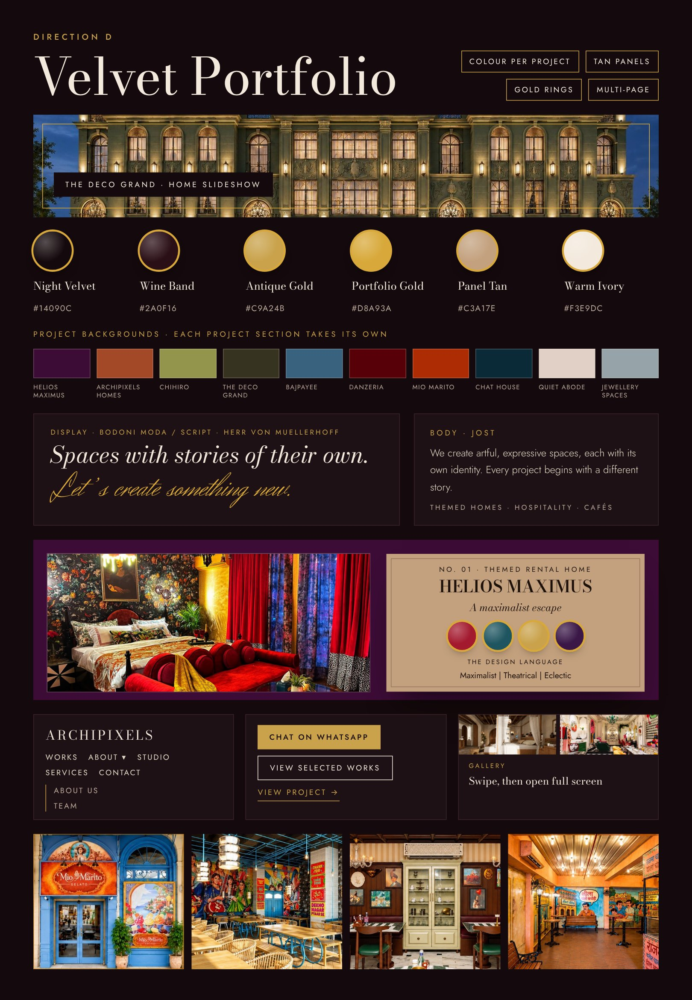
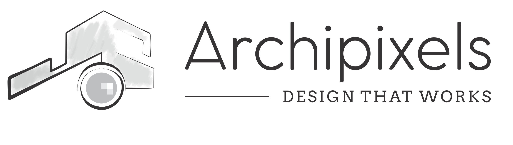
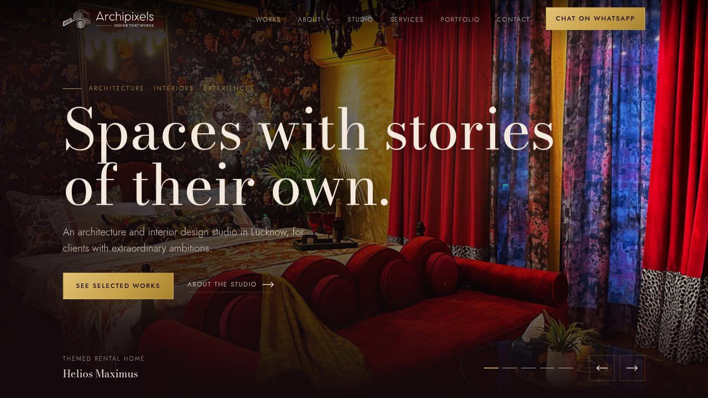
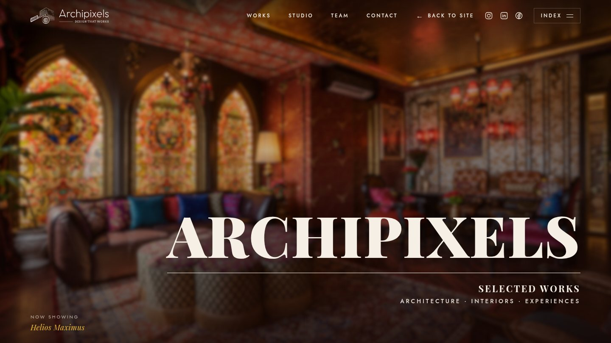
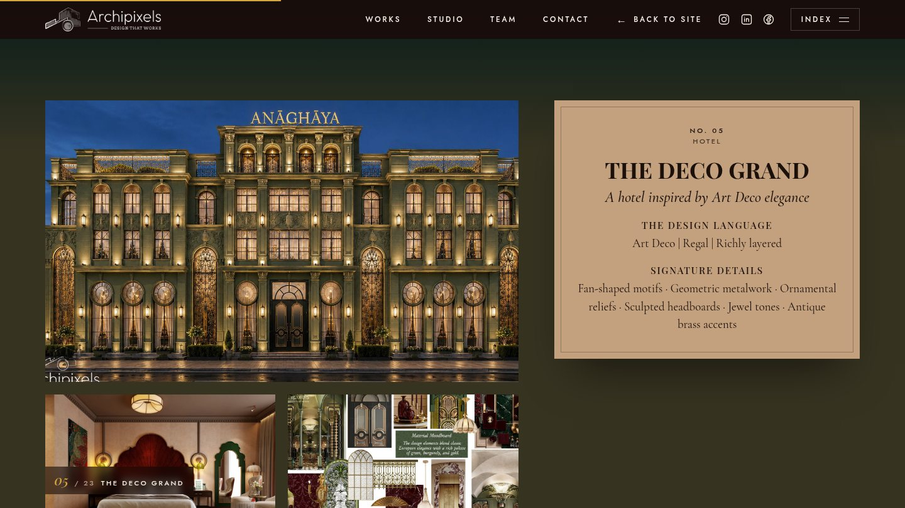

Brand guidelines
Spaces with stories of their own.
Brand guidelines
Spaces with stories of their own.
ArchipixelsBrand guidelines02
The brand
Archipixels is an architecture and interior design studio in Gomti Nagar, Lucknow, founded in 2018 by Shivika and Abhinav. The work is layered, expressive and sometimes unexpected, and always careful in its details. Every project begins with a different story, and no design is repeated.
ArchipixelsBrand guidelines03
The look

The site is a gallery to walk through. Night Velvet carries the page, gold draws the lines, a tan panel holds each project's story and the colour of every project fills its own section.
ArchipixelsBrand guidelines04
Logo


Clear space. Keep a margin around the logo equal to the height of the letter A in the wordmark.
Minimum size. The horizontal logo is never narrower than 120 px on screen or 30 mm in print. The mark alone is never narrower than 28 px.
Backgrounds. The white logo goes on Night Velvet, Wine Band, burgundy and project colours. The dark logo goes on Warm Ivory and Panel Tan.
ArchipixelsBrand guidelines05
Logo, what to avoid
Use the supplied files only. Do not redraw the mark, change the spacing between the mark, the wordmark and the line, or set the wordmark in another typeface.
ArchipixelsBrand guidelines06
Colour
#14090C · RGB 20, 9, 12
The page background of the site. Almost black, with a trace of wine.
#2A0F16 · RGB 42, 15, 22
Bands and panels that sit on Night Velvet.
#C9A24B · RGB 201, 162, 75
Eyebrows, rules, rings, links and the gold button on the website.
#D8A93A · RGB 216, 169, 58
The brighter gold of the one-page portfolio and the swatch rings.
#C3A17E · RGB 195, 161, 126
The panel on every project page. It holds the name, palette and design language.
#F3E9DC · RGB 243, 233, 220
Headlines and body text on dark pages. Never pure white.
Supporting colours
ArchipixelsBrand guidelines07
Colour, projects
On the website and in the portfolio, a project section uses the page colour taken from that project's palette. The text colour is chosen for contrast. The tan panel stays the same on every project, so the studio's frame holds the colours together.
ArchipixelsBrand guidelines08
Typography
Display · Bodoni Moda
Aa Bb Cc
Headlines and project names. Regular weight, large, with room around it. Italic carries the emphasis and takes the gold.
Regular 400 · Italic 400 · SemiBold 600
Body · Jost
Aa Bb Cc
Paragraphs, navigation, buttons and labels. Light 300 for text on dark, Regular 400 and Medium 500 for labels in capitals.
Light 300 · Regular 400 · Medium 500
Script · Herr Von Muellerhoff
Aa Bb Cc
The signature face. It sets the closing line and nothing else. It always appears large, in gold or ink, and never for body text.
One weight · closing line only
One-page portfolio
PROJECT NAME
Playfair Display 700, capitals, on the tan panel
A colourful slice of India
Cormorant Garamond Italic 500, taglines and swatch names
ArchipixelsBrand guidelines09
Typography, in use
The studio
Artful, maximalist and unafraid to experiment.
Our studio is an expression of who we are. It reflects the freedom we find in design.
We create artful, expressive spaces, each with its own identity. Every project begins with a different story, and we never repeat a design.
Chat on WhatsApp View selected works
ArchipixelsBrand guidelines10
Components
Swatch
A round dot with a gold ring and the colour's name beneath. Four to six swatches per project.
Tan panel
NO. 01 · THEMED RENTAL HOME
HELIOS MAXIMUS
A maximalist escape
Panel Tan, a thin inner outline, a soft shadow. Name, tagline, palette, design language and signature details.
Buttons and links
Chat on WhatsApp
View selected works
View project →
One gold button for the main action. An outlined button and an underlined arrow link for the rest.
Gold rules
Hairlines in Antique Gold draw out under headings and frame photographs. Corners stay square and shadows stay warm.
ArchipixelsBrand guidelines11
Photography


ArchipixelsBrand guidelines12
In use



ArchipixelsBrand guidelines13
Layout and motion
Layout
Wide pages with generous space. Content sits in a column up to 1280 px, with side gutters of 18 to 48 px. A section has 72 to 144 px of space above and below on the home page and half of that on inner pages. Work walls are four across on desktop, three on tablet and two on phones.
Motion
Soft and slow. Photographs fade up from the page colour, headings reveal word by word, and cards rise in one after another. A page fades softly into the colour of the next. Motion never hides content from someone who cannot see it, and it stops for visitors who ask their device to reduce motion.
Accessibility
Text keeps strong contrast against its background. Every photograph has a description, links are underlined or ringed on focus, and the site works from the keyboard and on a phone.
ArchipixelsBrand guidelines14
Voice
The studio talks about stories, curiosity and details. Sentences are short and name the thing. The tone invites a conversation with someone who has an ambitious space in mind.
Words we use
story · curiosity · layered · expressive · artful · details · identity · collaborators · extraordinary ambitions
Write
"Every project begins with a different story, and we never repeat a design."
"Have something wild in mind? Let's make it happen together."
Avoid
"We deliver world-class, cutting-edge design solutions."
"Contact page"
Link labels say "Contact us". Headings do not state a project count or a place name for earlier work.
ArchipixelsBrand guidelines15
Details
Files
Let's create something the world hasn't seen yet!